Índice General
1. ¿Qué es GeoGebra?. 13
1.1 Vistas Múltiples de los Objetos
Matemáticos. 13
1.1.1 Vista Gráfica. 14
1.1.2 Vista Algebraica. 14
1.1.3 Vista de Hoja de Cálculo. 15
1.2 GeoGebra: Medio para Enseñar y Aprender Matemáticas. 15
1.2.1 Personalizando la Interfaz
de Uso. 15
Exponiendo y Ocultando Objetos. 16
Personalizar la Vista
Gráfica. 16
Personalizar Ejes de Coordenadas y Cuadrícula. 16
Personalizando la Barra de Herramientas. 17
1.2.2 Cambiando las Propiedades de
los Objetos. 17
1.2.3 Usando el Menú Contextual 18
1.3 GeoGebra como Herramienta de
Presentación.. 18
1.3.1 Usando la Barra de
Navegación.. 18
1.3.2 Usando el Protocolo de
Construcción.. 19
Navegando y Modificando el Protocolo de Construcción.. 19
Exportando el Protocolo de Construcción como Página-Web. 20
1.3.3 Cambiando las Opciones de
GeoGebra. 20
1.4 GeoGebra como Herramienta de
Autor 20
1.4.1 Imprimiendo Opciones. 20
Imprimiendo la Vista Gráfica. 20
Imprimiendo el Protocolo de Construcción.. 21
1.4.2 Creando Imágenes de la Vista
Gráfica. 21
Guardando la Vista Gráfica como Imagen.. 21
Copiando la Vista Gráfica al Portapapeles. 22
1.4.3 Creando Páginas Web
Interactivas. 22
2. Entrada Geométrica. 24
2.1 Anotaciones Generales. 24
2.2 Herramientas de Construcción.. 24
Seleccionado Objetos. 24
Renombrar Objetos Rápidamente. 25
2.2.1 Herramientas Generales. 25
 Copia Estilo Visual 25
Copia Estilo Visual 25
 Borra Objeto. 25
Borra Objeto. 25
Elige y Mueve. 25
 Desplaza Área Gráfica. 25
Desplaza Área Gráfica. 25
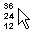 Registra en Hoja de Cálculo. 26
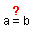 Relación.. 26
 Rota en torno a un Punto. 26
Rota en torno a un Punto. 26
 Expone / Oculta Rótulo. 26
Expone / Oculta Rótulo. 26
Expone / Oculta Objeto. 26
 Zoom de Acercamiento. 26
Zoom de Acercamiento. 26
Zoom de Alejamiento. 26
2.2.2 Puntos. 27
Intersección de Dos Objetos. 27
Punto Medio o Centro. 27
Nuevo Punto. 27
2.2.3 Vectores. 27
 Vector entre Dos Puntos. 27
Vector entre Dos Puntos. 27
 Vector desde un Punto. 27
Vector desde un Punto. 27
2.2.4 Segmentos. 28
 Segmento entre Dos Puntos. 28
Segmento entre Dos Puntos. 28
 Segmento dados Punto Extremo y Longitud. 28
Segmento dados Punto Extremo y Longitud. 28
2.2.5 Semirrecta. 28
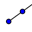 Semirrecta que pasa por Dos Puntos. 28
2.2.6 Polígonos. 28
Polígono. 28
Polígono Regular 28
2.2.7 Rectas. 28
Bisectriz. 28
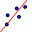 Ajuste Lineal 29
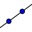 Recta que pasa por Dos Puntos. 29
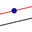 Recta Paralela. 29
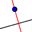 Recta Perpendicular 29
 Mediatriz. 29
Mediatriz. 29
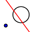 Recta Polar o Diametral 29
 Tangentes. 29
Tangentes. 29
2.2.8 Secciones Cónicas. 30
Circunferencia dados su Centro y Radio. 30
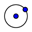 Circunferencia dados su Centro y uno de sus
Puntos. 30
 Circunferencia dados Tres de sus Puntos. 30
Circunferencia dados Tres de sus Puntos. 30
 Compás. 30
Compás. 30
 Cónica dados Cinco de sus Puntos. 30
Cónica dados Cinco de sus Puntos. 30
Elipse. 30
 Hipérbola. 30
Hipérbola. 30
 Parábola. 31
Parábola. 31
2.2.9 Arcos y Sectores. 31
 Arco de Circunferencia dados su Centro y Dos
Extremos. 31
Arco de Circunferencia dados su Centro y Dos
Extremos. 31
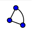 Sector Circular dados su Centro y Dos Puntos. 31
 Arco de Circunferencia dados Tres de sus
Puntos. 31
Arco de Circunferencia dados Tres de sus
Puntos. 31
 Sector Circular dados Tres Puntos de su Arco. 31
Sector Circular dados Tres Puntos de su Arco. 31
 Semicircunferencia dados Dos Puntos. 31
Semicircunferencia dados Dos Puntos. 31
2.2.10 Números y Ángulos. 31
 Angulo. 31
Angulo. 31
 Angulo dada su Amplitud. 32
Angulo dada su Amplitud. 32
 Área. 32
Área. 32
 Distancia o Longitud. 32
Distancia o Longitud. 32
 Deslizador 32
Deslizador 32
 Pendiente. 33
Pendiente. 33
2.2.11 Control Booleano. 34
 Casilla de Control para Exponer / Ocultar
Objetos. 34
Casilla de Control para Exponer / Ocultar
Objetos. 34
2.2.12 Lugar Geométrico. 34
 Locus Lugar Geométrico. 34
Locus Lugar Geométrico. 34
2.2.13 Transformaciones
Geométricas. 34
 Homotecia desde un Punto por un Factor de
Escala. 34
Homotecia desde un Punto por un Factor de
Escala. 34
 Refleja Objeto en Recta. 34
Refleja Objeto en Recta. 34
 Refleja Objeto por Punto. 35
Refleja Objeto por Punto. 35
 Refleja Punto en Circunferencia. 35
Refleja Punto en Circunferencia. 35
 Rota Objeto en torno a Punto, el
Ánguloindicado. 35
Rota Objeto en torno a Punto, el
Ánguloindicado. 35
 Traslada Objeto por un Vector 35
Traslada Objeto por un Vector 35
2.2.14 Texto. 35
 Inserta Texto. 35
Inserta Texto. 35
Texto Dinámico. 35
Fórmulas LaTeX.. 36
2.2.15 Imágenes. 37
 Inserta imagen.. 37
Inserta imagen.. 37
Propiedades de las Imágenes. 37
Imagen de Fondo. 38
Transparencia. 38
3. Entrada Algebraica. 39
3.1 Anotaciones Generales. 39
Nombrando Objetos. 39
Cambio de Valores. 40
Exponer la Historia de la Barra de Entrada. 40
Expone el Valor o la Definición de un Objeto. 40
Inserta Nombre, Valor o Definición
de un Objeto en la Barra de Entrada. 40
3.2 Entrada Directa. 41
3.2.1 Números y Ángulos. 41
Números. 41
Ángulos. 42
Deslizadores y
Teclas-Flecha. 42
Valor Limitado a un Intervalo. 42
3.2.2 Puntos y Vectores. 42
3.2.3 Rectas y Ejes. 43
Rectas. 43
Ejes. 43
3.2.4 Sección Cónica. 43
3.2.5 Función de x. 43
Función Limitada a un Intervalo. 44
3.2.6 Funciones Pre-Definidas y
Operaciones. 44
3.2.7 Variables Booleanas y
Operaciones. 45
Casilla a Tildar y Teclas Flecha. 45
Operaciones Booleanas. 45
3.2.8 Lista de Objetos y de
Operaciones. 47
Comparar Listas de Objetos. 47
Aplicar Operaciones y Funciones a las Listas. 47
3.2.9 Matrices como Objetos y
Operaciones con Matrices. 48
Operaciones con Matrices. 48
3.2.10 Números Complejos y
Operaciones. 49
3.3 Comandos. 49
Nombres de Comandos Completados Automáticamente. 50
3.3.1 Comandos Generales. 50
PasoConstrucción.. 50
Borra. 50
Relación.. 50
3.3.2 Comando Booleano. 50
Si 50
Definido. 50
EsEntero. 50
3.3.3 Números. 51
RazónSimple. 51
Area. 51
PasoEje. 51
NúmeroCombinatorio. 51
PerímetroCónica. 51
RazónDoble. 51
Curvatura. 51
Distancia. 51
LongitudSemiejePrincipal 52
LongitudSemiejeSecundario. 52
MCD mcd. 52
Cociente Entero. 52
Integral 52
Iteración.. 52
MCM.. 52
Longitud. 53
SemiFocal 53
SumaInferior 53
Mínimo y Máximo. 53
Función Módulo o Resto. 53
Parámetro. 53
Perímetro. 53
Radio. 54
Comandos Aleatorios. 54
Pendiente. 54
SumaTrapezoidal 54
SumaSuperior 54
3.3.4 Ángulo. 54
Ángulo. 54
3.3.5 Puntos. 55
Centro. 55
Centroide. 55
Esquina. 55
Extremo. 55
Foco. 55
PuntoInflexión.. 55
Interseca. 55
PuntoMedio. 56
Punto. 56
Raíz. 56
Vértice. 56
3.3.6 Vectores. 57
Vector Curvatura. 57
Dirección.. 57
VectorPerpendicular 57
VectorUnitarioPerpendicular 57
VectorUnitario. 57
Vector 57
3.3.7 Segmentos. 57
Segmento. 57
3.3.8 Semirrectas. 58
Semirrecta. 58
3.3.9 Polígonos. 58
Polígono. 58
3.3.10 Rectas. 58
Bisectriz. 58
Asíntota. 58
Ejes. 58
Diámetro. 58
Directriz. 58
EjePrincipal 58
Recta. 58
Perpendicular 59
Mediatriz. 59
Polar 59
EjeSecundario. 59
Tangente. 59
3.3.11 Secciones Cónicas. 59
Circunferencia. 59
Cónica. 59
Elipse. 60
Hipérbola. 60
CírculoOsculador 60
Parábola. 60
3.3.12 Funciones. 60
Funciones Condicionales. 60
Derivada. 60
Desarrolla. 61
Factoriza. 61
Función.. 61
Integral 61
Polinomio. 61
Simplifica. 61
PolinomioTaylor 61
3.3.13 Curvas Paramétricas. 62
Curva. 62
Comandos para curvas paramétricas. 62
3.3.14 Arcos y Sectores. 62
Arco. 62
ArcoCircunferencia. 63
SectorCircular 63
ArcoCircuncircular 63
SectorCircumcircular 63
Sector 63
Semicircunferencia. 63
3.3.15 Texto. 63
TextoFracción.. 63
LaTeX.. 63
CódigoDeLetra. 64
Nombre. 64
Objeto. 64
TablaTexto. 64
Texto. 65
CódigoDeTexto. 65
LetraDeCódigo. 65
TextoDeCódigo. 66
3.3.16 Lugar Geométrico. 66
Locus- LugarGeométrico. 66
3.3.17 Listas y Secuencias. 66
Anexa. 66
CuentaSi 66
Elemento. 66
Primero. 66
Intercala. 67
Intersección.. 67
ListaIteración.. 67
Encadena. 67
ConservaSi 68
Ultimo. 68
Longitud. 68
Mínimo. 68
Máximo. 68
Producto. 68
EliminaIndefinidos. 68
ListaInversa. 68
Secuencia. 68
Ordena. 69
Suma. 69
Extrae. 69
Unión.. 69
3.3.18 Transformaciones
Geométricas. 70
Homotecia. 70
Refleja. 70
Rota. 70
Traslada. 71
3.3.19 Comandos Estadísticos. 71
Barras. 71
DiagramaCaja. 72
CPearson.. 72
Covarianza. 72
AjusteLineal 72
Otros Comandos de Ajuste. 73
Histograma. 73
NormalInversa. 73
Comandos de Media. 73
Mediana. 74
Moda. 74
Normal 74
Comandos Cuatril 74
DE.. 74
Comandos Sigma. 74
Comandos para Cantidades Estadísticas. 74
Varianza. 75
3.3.20 Comandos de Hoja de Cálculo. 76
RangoCelda. 76
Columna. 76
NombreColumna. 76
Fila. 76
3.3.21 Comandos de Matrices. 76
Determinante. 76
MatrizInversa. 76
Traspone. 76
4. Cada Menú: Ítem por Ítem.. 77
4.1 Menú Archivo. 77
 Nueva Ventana. 77
Nueva Ventana. 77
Nuevo. 77
 Abre
... 77
Abre
... 77
 Guarda. 77
Guarda. 77
Guarda Como
... 77
 Previsualiza Impresión.. 78
Previsualiza Impresión.. 78
Exporta - Hoja Dinámica como Página Web (html)
... 78
Exporta -  Vista Gráfica como Imagen (png, eps)
... 78
Vista Gráfica como Imagen (png, eps)
... 78
Exporta - Vista Gráfica al Portapapeles. 79
Exporta - Vista Gráfica como PSTricks
... 79
Exporta - Vista Gráfica como
PGF/TikZ
... 79
Cierra. 79
4.2 Menú Edita. 79
Deshace. 79
 Rehace. 79
Rehace. 79
 Copia Vista Gráfica al Portapapeles. 79
Copia Vista Gráfica al Portapapeles. 79
Borra. 80
Selecciona Todo. 80
Selecciona la Capa Activa. 80
Selecciona Descendientes. 80
Selecciona Ascendientes. 80
Propiedades
... 80
4.3 Menú Vista. 81
Ejes. 81
Cuadrícula. 81
Vista Algebraica. 81
Vista de Hoja de Cálculos. 81
Objetos Auxiliares. 81
División Horizontal 81
Barra de Entrada. 81
Lista de Comandos. 81
Protocolo de Construcción
... 81
Barra de Navegación por Pasos de Construcción.. 82
 Actualiza Vistas. 82
Actualiza Vistas. 82
Recálculo de Todos los Objetos. 82
4.4 Menú Opciones. 82
 Atracción de Punto a Cuadrícula. 82
Atracción de Punto a Cuadrícula. 82
 Unidad Angular 82
Unidad Angular 82
Redondeo. 82
Continuidad. 82
 Estilo de
Punto. 83
Estilo de
Punto. 83
 Tamaño de Casilla de Control 83
Tamaño de Casilla de Control 83
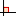 Estilo de Angulo Recto. 83
Coordenadas. 83
 Rotulado. 83
Rotulado. 83
 Tamaño de Letra. 83
Tamaño de Letra. 83
Idioma. 83
 Vista Gráfica. 83
Vista Gráfica. 83
Guardar Configuración.. 84
Restablecer la Configuración Original 84
4.5 Menú Herramientas. 84
Creación de Herramienta Nueva
... 84
Gestión de Herramientas
... 84
Personalizar la Barra de Herramientas
... 84
4.6 Menú Ventana. 85
Nueva Ventana. 85
Lista de Ventanas Abiertas de GeoGebra. 85
4.7 Menú Ayuda. 85
 Ayuda. 85
Ayuda. 85
 www.geogebra.org. 85
www.geogebra.org. 85
Foro GeoGebra - GeoGebra Forum.. 85
 GeogebraWiki 86
GeogebraWiki 86
 Acerca de GeoGebra / Licencia. 86
Acerca de GeoGebra / Licencia. 86
5. Características Especiales de
GeoGebra. 87
5.1 Animación.. 87
Animación Automática. 87
Animación Manual 87
5.2 Visibilidad Condicional 88
Expone u Oculta Condicionalmente Objetos Existentes. 88
Cambiando la Visibilidad de Objetos Recién Creados. 88
5.3 Herramientas Definidas para
Diversos Usos. 89
Creando Herramientas. 89
Guardando la Herramienta Definida. 89
Acceso a la Herramienta Definida. 90
5.4 Colores Dinámicos. 90
5.5 Interfaz de JavaScript 91
5.6 Teclas de Atajo. 91
5.7 Rótulos y Subtítulo. 94
Expone y Oculta Rótulos. 94
Nombre y Valor 94
Subtítulo. 95
5.8 Capas. 95
5.9 Redefine. 95
5.10 Rastro y Lugar Geométrico. 96
Índice Alfabético. 98
www.geogebra.org